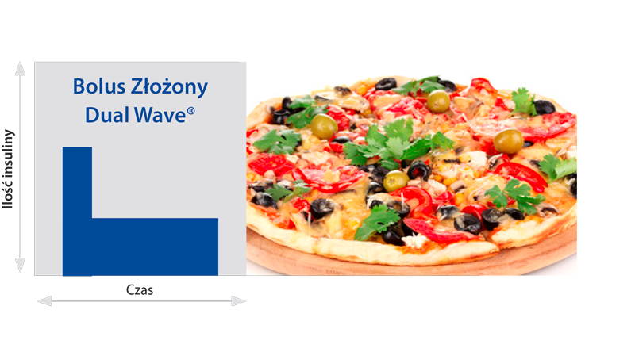

Bolus złożony Dual Wave® to kombinacja Bolusa Zwykłego i Bolusa o Przedłużonym
Działaniu, Square Wave®. Część ustawionej dawki jest podawana od razu, a reszta przez
pewien zaprogramowany okres czasu. Użytkownik ma możliwość zdecydować, w jaki
sposób dawka ma być podzielona (np. 70% Bolus Zwykły i 30% Bolus o Przedłużonym
Działaniu, Square Wave®). Użytkownik określa również, jak długo ma trwać podawanie
insuliny za pomocą Bolusa o Przedłużonym Działaniu, Square Wave®. Bolus Złożony, Dual
Wave® jest w zasadzie najczęściej podawanym bolusem i raczej jest on odpowiedni dla
wszystkich rodzajów posiłków, które zawierają kombinację węglowodanów i tłuszczy. Im
bardziej tłusty jest posiłek, tym większa część dawki powinna być podawana, jako Bolus o
Przedłużonym Działaniu, Square Wave® i tym dłuższy powinien być też czas, na jaki dawka
powinna zostać rozłożona.
Udowodniono, że bolus ten jest najskuteczniejszy do posiłków zawierających
węglowodany, białka i tłuszcze
